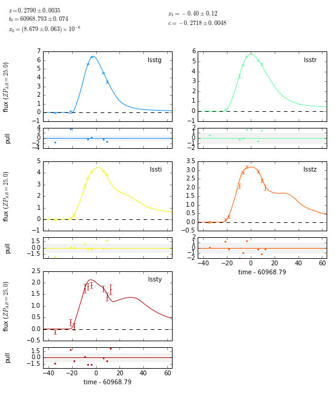
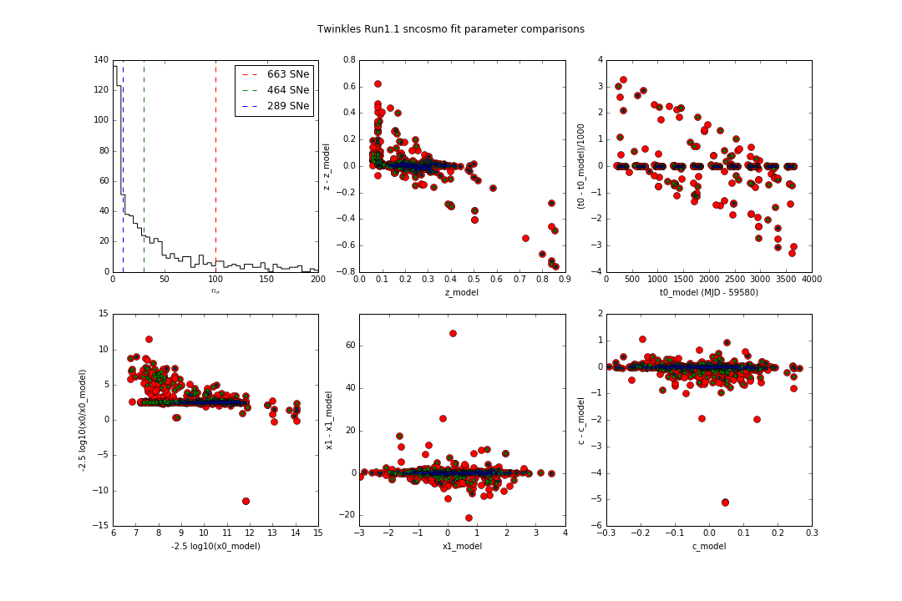

This week, we worked on preparing to present our results - both science and CI pathfinding - at the Oxford meeting, and before that, at LSST@SLAC. We also completed the Run 2 DM processing at NERSC, and saw our first SALT2 sncosmo fits of Twinkles supernovae!
The Twinkles Task Force (and in particular, Tony, Jim and Phil) are giving a 45 minute talk at SLAC on Friday July 8th to the combined LSST community at SLAC. We’re using this as a way of preparing for the “Lessons from Twinkles” CI2 session in Oxford.
Our Google slideset is under development here - we went through it together in our meeting, and identified some things that still need doing:
Describing the survey, including defining Run 1, 1.1, 2 etc, and explaining how we used PhoSim
In general, include more lessons learned, from our growing “Lessons Learned” page
Jim has set up to run SNCosmo on the forced source light curves, and has results some nice results - here’s an example of a SALT2 fit to an isolated Twinkles supernova:

You can read more in issue 270, where he and Rahul have been discussing this work. Jim finds that while many known supernovae are not well-fitted by SALT2, around 50% have reasonable fits (see below). While we don’t yet know what the impact on cosmology would be, this exercise shows what shoudl be possible in terms of analysis in the fall.

Cori is back up (for now, apart from now weekly downtime). Run 2 is complete, but getting to that point was a little frustrating and there are still some mysteries to understand. See comments and diagrams at end of discussion on issue 201 and in workflow slides in Twinkles LSST@SLAC talk. Input from Rollin at NERSC on exactly where to install the DM stack was crucial to improving the efficiency to acceptable levels.
Heather got started on the weekly updates: the HTML exported directly from GoogleDocs is not pretty, but using Pandoc to convert docx exported from GoogleDocs to HTML is much better. We agreed to try this, with Phil cleaning up the weekly meeting notes and Heather producing HTML for the Twinkles website.
Heather is going to priortize the better installation docs (issue #160) -so that Phil can alpha-test. She will then move on to setting up Sphinx API docs for The Monitor (issue Monitor/#33) - the plan is to have travis deploy sphinx-generated html to the gh-pages branch, visible at http://darkenergysciencecollaboration.github.io/Monitor/